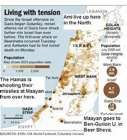

Hamas militants on Sunday freed 17 more hostages, including 14 Israelis, in a third set of releases under a cease-fire deal. Red Cross representatives transferred the hostages out of Gaza late Sunday. Some were handed over directly to Israel, while others left through Egypt. ALSO READ Palestinian families rejoice over release of minor, women from Israeli prisons amid ceasefire The Army said one of the hostages was airlifted directly to an Israeli hospital.
Israel was to free 39 Palestinian prisoners later Sunday as part of the deal. It was the third consecutive day in which Hamas released Israeli hostages it has been holding in Gaza in exchange for Palestinian prisoners. A fourth exchange is expected to take place on Monday – the last day of the four-day cease-fire between the enemies. A total of 50 hostages and 150 Palestinian prisoners are to be freed.
Israel declared war on Hamas after the Islamic militant group carried out a cross-border attack on Oct. 7 that killed some 1,200 people and took 240 people hostage. An Israeli offensive in Gaza has left over 13,300 people dead, according to health authorities in the Hamas-run territory. International mediators led by the U.S. and Qatar are trying to extend the cease-fire
Over the past weeks, India has expressed itself in statements, joint statements, and votes at the United Nations on the ongoing Israel-Hamas conflict, that saw a temporary pause for the exchange of hostages which began on Friday, November 24. Prime Minister Narendra Modi hosted two separate virtual summits, the concluding session of India’s G-20 and the second edition of the ‘Voice of Global South’ Summit, and spoke about the ongoing Israel-Hamas conflict, as well as the importance of heeding the concerns of the developing world. External Affairs Minister S. Jaishankar travelled to the U.K. for talks, held along with Defence Minister Rajnath Singh “2+2” dialogues with their counterparts from the U.S. and Australia where joint statements reflected the West’s position much more.
India’s position, as articulated since the October 7 terror attacks along the Israel-Gaza border by Hamas that killed more than 1,200 people, and then on the bombardment of Gaza by Israel where more than 13,000 have been killed, has been multi-layered. The Modi government has condemned terrorism in the strongest language and stood with Israel over the attack, although it hasn’t thus far designated Hamas as a terror group. The government has called on Israel for restraint, dialogue and diplomacy and condemned the death of civilians, and along with the U.S. and Australia, called for “humanitarian pauses” in bombardment, but has not so far called for a “ceasefire”. At the same time,
India has reaffirmed its support for a “two-state solution” including a sovereign, viable state of Palestine existing in peace alongside Israel, supported the “socio-economic welfare” of the Palestinian people, and has sent 70 tonnes of humanitarian assistance including 16.5 tonnes of medicines and medical supplies via Egypt to Gaza in the past month, Mr. Jaishankar said at the BRICS emergency meeting chaired by South Africa this week.
Russia said on Sunday it had downed Ukrainian drones over five regions, including Moscow, as well as two Ukrainian missiles over the Azov Sea, a day after a large-scale Russian drone attack on Kyiv. Russia and Ukraine have hit each other with drones for months, as Moscow's offensive drags on for into a 22nd month, with little significant movement on the front, despite fierce fighting
In June 2020, the Ministry of Foreign Affairs of Denmark has developed a “Global Action Climate Strategy: A Green and Sustainable World” to slash emissions and set a framework for limiting global warming below 1.5C as set by the 2015 Paris Agreement.
The Danish government’s agreement outlines five goals:
These five goals set out by the Ministry of Foreign Affairs of Denmark can help reduce emissions, support the needs of developing countries, promote investment in green energy and other technologies, and spark innovation for other countries. Additionally, Denmark is part of the Nordic Countries in the European Union Renewable Energy Directive where countries have been working together to reach net-zero goals.
Since the climate strategy was released in 2020, Denmark made a decision to invest in a renewable energy project called Energy Islands, consisting of a network of offshore wind turbines in the North and Baltic Seas. In collaboration with government and private sectors, this project will generate enough energy for three million households, providing Danes and neighboring countries to power their homes. This project is set to be up and running by 2033. Although this project is yet to be completed it has potential to provide Denmark and surrounding countries to be fully renewable thus reducing the need for fossil fuels and non-renewable energy sources.
In 2017, the Ministry of Climate and Enterprise of Sweden developed a climate policy framework containing climate goals, a climate act, and a climate policy council.
These three goals set by the Ministry of Climate and Enterprise of Sweden will reduce greenhouse gas emissions with the Council holding government bodies responsible, foster investment with carbon offsets and protection of forests, and simultaneously look at climate and budget policies as a whole. Additionally, Sweden is part of the Nordic Countries in the European Union Renewable Energy Directive where countries have been working together to reach net-zero goals.
Like most countries around the world, Chile is dealing with its fair share of climate change-related impacts, from droughts and water shortages to extreme weather events, which have driven the country for a shift in political leadership and a push towards greener policies.
In June 2022, the Ministry of Environment of Chile introduced a Framework Law on Climate Change that introduced objectives, laws, and projections on climate vulnerable areas for Government Ministries to act in accordance with. The Framework is extensive and specific but sets an example for other countries to follow suit. The main objective is to reduce and absorb greenhouse gas emissions, reaching carbon neutrality by 2050, which will be monitored and reported every five years by the Ministry of Environment.